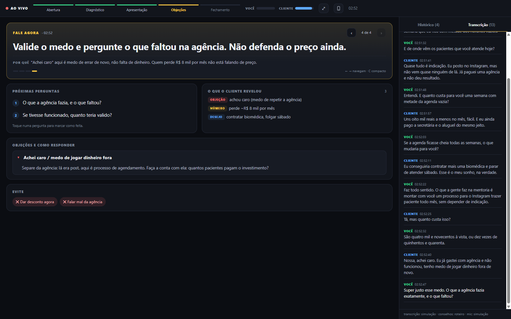

Na hora do “tá caro”, você vai saber o que responder.
O Copiloto escuta a sua call de venda ou mentoria e mostra na tela, ao vivo, o que falar agora: a próxima pergunta, a resposta para a objeção e o que o cliente acabou de revelar. Grátis, em português, roda no Claude Code.
Funciona no Google Meet, Zoom e Teams, sem colocar robô na reunião. Windows e Mac.
Pergunte como está a agenda da clínica hoje.
Quem fala primeiro do problema é o cliente.
Você conduz a conversa. Ele cuida do resto.
Enquanto você fala, o copiloto ouve os dois lados (o seu microfone e a voz do cliente que sai do computador), transcreve e analisa a conversa com o roteiro de venda ou de mentoria. Cada vez que o cliente revela algo, o painel muda.

Fale agora
A próxima frase ou pergunta, com o porquê, usando as palavras do próprio cliente. Muda só quando a conversa avança.
O que o cliente revelou
Dores, números, desejos, prazos e quem decide, organizados enquanto ele fala.
Objeções com resposta
“Tá caro”, “vou pensar”, “preciso falar com meu sócio”: a causa provável e o caminho para responder.
Resumo e follow-up
No fim, tarefas com dono e prazo, quanto você falou e quanto o cliente falou, e a mensagem de WhatsApp pronta para enviar. Veja um resumo de exemplo.
Instala em um minuto. Quem instala é o seu Claude.
Você precisa do Claude Code no computador. O resto ele faz sozinho: baixa, configura e testa o seu microfone.
Copie o pedido
O texto abaixo já tem o link do repositório e o passo a passo para o Claude seguir.
Cole no Claude Code
Ele instala, testa o seu áudio e pergunta sobre o que você vende: ofertas, preços, objeções e o seu script de vendas, se tiver.
Antes da call
Digite /reuniao venda Nome-do-cliente o que você vende. O painel abre. No fim, /reuniao-fim.
Instala pra mim o Copiloto de Reunião: https://github.com/marcusforti/copiloto-reuniao Siga o arquivo INSTALAR.md do repositório.
Grátis no seu PC, ou mais rápido pagando centavos.
Os dois caminhos usam o mesmo painel e os mesmos roteiros. A diferença é onde a transcrição acontece. Dá para trocar com uma linha.
Grátis
R$ 0, para sempre
- Transcrição no seu computador (Whisper). O áudio não sai do PC.
- De 2 a 5 segundos de atraso
- Usa ~1 GB de memória durante a call
- Conselhos pelo Claude Code, no plano que você já tem
Para quem quer começar hoje e manter tudo no próprio computador.
Pago
Centavos por hora, direto no provedor
- Transcrição em tempo real (Deepgram ou Soniox), com menos de 1 segundo
- Quase não pesa no PC: bom para notebook simples
- Deepgram dá US$ 200 de crédito para conta nova, que rendem centenas de horas
- Opcional: conselhos pela API da Anthropic, sem depender do Claude Code aberto
Para quem faz muitas calls por semana e quer a resposta mais rápida.
Ele aprende o que você vende e como você vende.
Na instalação, o Claude faz uma entrevista rápida sobre o seu negócio. Se você já tem um script de vendas, é só colar ou indicar o arquivo. A partir daí, cada conselho na call usa os seus produtos, os seus preços, as suas provas e o seu jeito de conduzir.
O que você oferece
Produtos, para quem é cada um, o que entrega, preço, parcelamento e garantia. Ele nunca inventa uma condição que você não oferece.
Quem é o seu cliente
As dores, os desejos e as objeções que você mais ouve, com a resposta que funciona para você.
O seu script
O roteiro que você já usa vira o caminho da call. O copiloto segue as suas etapas, não um método genérico.
Feito para o que acontece numa call de verdade.
Fone que troca de modo, notebook simples, call que passa da hora. Ele foi pensado para não te deixar na mão no meio da conversa.
Trocou de fone? Continua ouvindo.
Ele segue o microfone que a reunião usa, escuta todas as saídas de som e avisa na tela se parar de ouvir alguém.
Notebook simples? Roda leve.
A transcrição grátis usa cerca de 1 GB de memória, e o modo pago quase não pesa. Nos testes, acertou 94% a 96% das palavras.
Call longa? Vai até o fim.
A gravação roda separada do Claude Code, sem limite de tempo. Se algo reiniciar, ele continua de onde parou.
Perguntas que todo mundo faz
O cliente percebe?
Não entra robô nenhum na reunião: o copiloto ouve o áudio que já passa pelo seu computador. Mesmo assim, avise no começo que a conversa está sendo transcrita. É o certo e é o que a LGPD pede. Uma frase basta: “vou usar um assistente que anota a nossa conversa, tudo bem?”.
E se eu compartilhar a tela?
Compartilhe só a aba ou a janela da apresentação, nunca a tela inteira. Melhor ainda: abra o painel no celular pelo QR code e use como segunda tela.
Preciso pagar alguma coisa?
No modo grátis, não. Você só precisa do Claude Code com um plano pago do Claude, que é onde os conselhos são gerados. O modo pago cobra centavos por hora diretamente no provedor de transcrição que você escolher.
Funciona no Mac?
Sim. O Mac não deixa programas ouvirem o som do sistema sem um “cabo virtual”, então a instalação inclui o BlackHole (grátis) e um passo de um minuto nas configurações de áudio.
Serve para mentoria, não só para venda?
Sim. Tem os modos venda, mentoria, diagnóstico e reunião geral, cada um com o seu roteiro. Na mentoria ele acompanha as vitórias, os desafios e os compromissos de cada sessão. Os roteiros ficam em arquivos de texto e dá para colocar o seu próprio método.
Onde ficam as minhas reuniões?
No seu computador, na pasta CopilotoReuniao. Cada reunião tem transcrição, conselhos e um resumo em HTML. Nada vai para servidor nosso.
A próxima call você não faz sozinho.
Instala hoje, testa com o /reuniao-demo e usa na próxima venda. Se quiser ajuda para colocar isso no seu time, me chama.